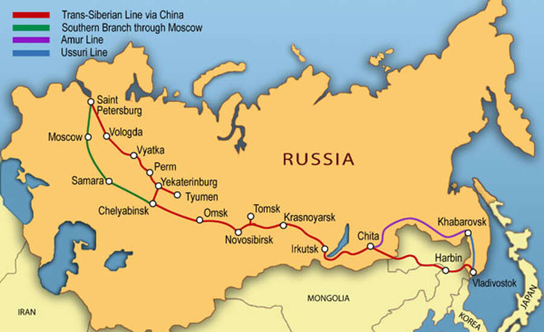
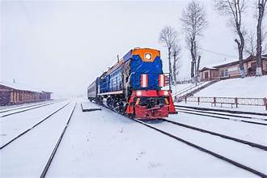
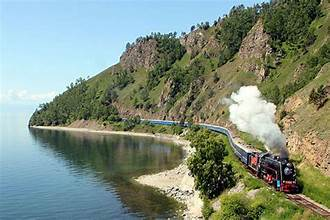
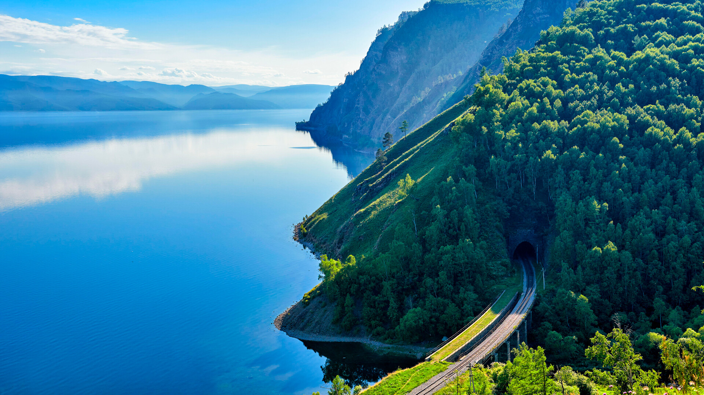
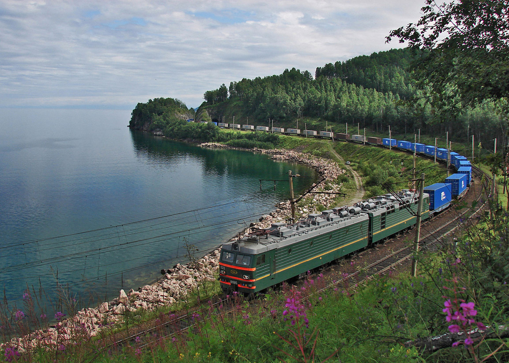
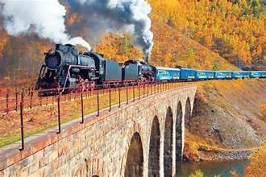

The Trans-Siberian Railway is the world’s longest continuous rail line, spanning Russia from Moscow to Vladivostok. Completed in 1916, it stretches about 9,289 km (5,772 mi) across eight time zones, linking Europe and Asia through Siberia’s vast forests, rivers, and steppes. It remains a central artery of Russia’s transport and economic network.
Planned to unify the Russian Empire and accelerate Siberia’s development, the project began in 1891 under Emperor Alexander III, with his son Nicholas laying the first stone. Engineers faced harsh climates, permafrost, and rugged terrain while more than 85,000 workers — including soldiers and convicts — built segments simultaneously from both ends. The railway reached Vladivostok entirely on Russian territory by 1916.
Starting in Moscow, the railway traverses the Ural Mountains, Siberian taiga, and Lake Baikal before reaching Vladivostok on the Pacific coast. Key cities along the route include Yekaterinburg, Novosibirsk, Irkutsk, and Ulan-Ude. The journey offers diverse landscapes, from dense forests to vast steppes, making it a unique travel experience.
The railway transformed Siberia from an isolated frontier into a populated industrial region. It served critical roles in the Russo-Japanese War, World War II, and Soviet industrialization, enabling troop and resource movement. Today it carries roughly 30 percent of Russia’s exports, supporting energy and minerals trade between Europe and Asia.
Fully electrified and double-tracked, the Trans-Siberian is operated by Russian Railways and forms part of the East–West international transport corridor. Passenger services, including the classic Rossiya train No. 001/002, complete the Moscow–Vladivostok journey in about seven days. Tourist routes such as the Golden Eagle and Tsar’s Gold Train offer luxury rail experiences across Eurasia.


